| LabelTcxLabel → control.text | ready 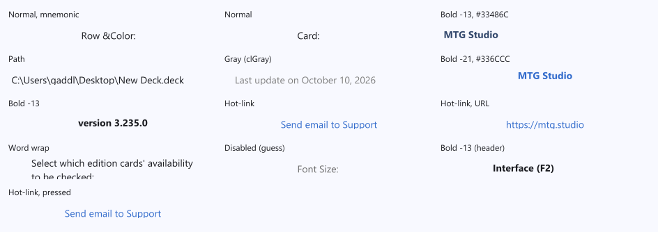 The baseline: control.text in the Neper type scale, same samples. | review 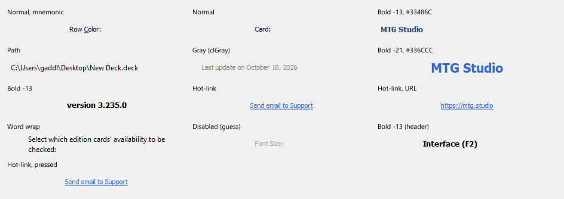 No control.e branch: the Windows tokens already set the body text to 11.2 px regular black (ink width of "Row Color:" is 78 px at 150 %, identical to the Grids options capture). The sheet shows v3's TcxLabel styles read from the DFMs: bold, 13 px, clGray (#808080) hints, disabled, the hot-link style (#336CCC underlined), a clWhite and a clBtnFace background, word wrap and a clipped long label. 8 known gaps- Disabled colour (#6D6D6D, GrayText) is a guess; no captured disabled label
- The hot-link underline is a 1 unit line under the text (no underline in control.text); it has no hover state here
- The accelerator underline (&Color in v3 captions) is not drawn
- Bold needs Segoe UI Bold, now registered as font 9 in e.ui.looks (the harness had regular faces only); bold use in v3 is Tahoma bold, face not confirmed
- A clipped label shows no ellipsis (the box clips); v3's AutoSize = False label also just clips
- Rotated labels (Properties.Angle = 90) are not drawn
- Captured text is ClearType (coloured fringes), ours is grayscale
- Two cells with the same text in one sheet failed with InvalidTree in the harness; the sheet avoids duplicates
| planned | planned | planned |
| ButtonTcxButton → control.button | ready 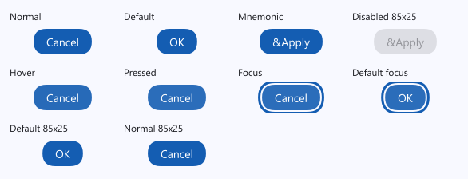 The baseline: the existing v2 pill button, all states. Unchanged by looks-polish; button_kinds.png adds the picture, split, toggle and busy buttons. | review 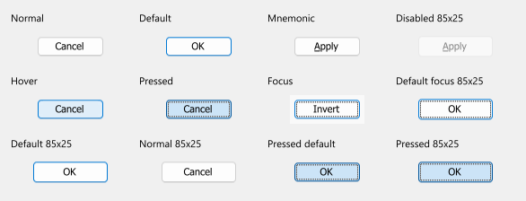 Matches the Options dialog and Format Report captures at 150 %: face #FDFDFD, border, accent default/focus border, visible box 73.3 x 21.3 (DFM 75 x 23 less the 1.67 the theme draws inside), label ink 47 px, disabled face #F9F9F9 / border #EAEAEA / label #878787 (measured on Apply). Added: dotted focus rectangle, picture + caption (centred group, 16 px picture), picture alone (29.3 wide), split button, toggle, busy ring, all in windows/button_kinds.png. DFM census: 102 TcxButton, 84 are 75 x 23, lfFlat/lfOffice11 with NativeStyle all draw the same native look. Dark palette: windows-dark/button.png and button_kinds.png; high-contrast palettes verified in renders, not committed as sheets. Evidence table: docs/ui/looks/windows-measurements.md. 7 known gaps- Hover and pressed faces (#F6F6F6, #F0F0F0) are guesses: no v3 capture shows a hovered or pressed button
- Toggled-on, split arrow part, busy ring size and the dotted rectangle's inset are guesses (no v3 capture of them)
- The native border is darker at the bottom than the top (#C3C3C3 vs #D8D8D8) and the default button has a lighter inner ring: one flat border colour is drawn
- The accelerator underline (&Apply) is not drawn
- Segoe UI is used for every button; v3 dialogs that set Tahoma 8 pt (dxPrinting forms, 12 buttons) are not switched
- Windows Dark and high-contrast colours are unmeasured (no v3 capture in those palettes)
- The 1.67 px inset is measured at 150 % only; at 100 % the theme may inset by 1 px
| started 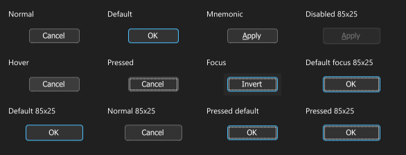 Windows 11 dark palette (face #2B2B2B, border #5A5A5A, accent #4CC2FF, white text) rendered for the button only; every colour is unmeasured (no v3 capture in dark). 2 known gaps- No v3 capture exists in dark: all colours are Windows 11 defaults from memory
- Only the button is rendered in this palette so far
| planned | planned |
| Check boxTcxCheckBox → control.checkbox | ready 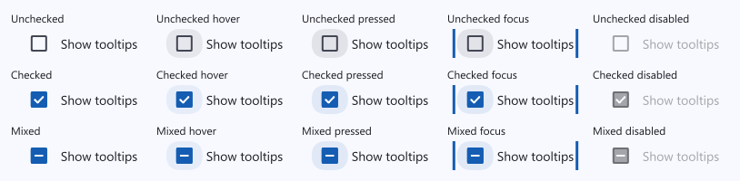 The baseline: the v2 18 px box in its 40 px state circle, all states. | review 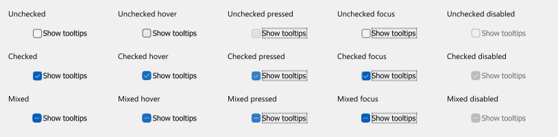 Rest unchecked and checked match the Options dialog capture at 150 %: 13 unit box (20 px), #F3F3F3 face with #636363 edge, #005FB8 fill with a white tick, caption 2 units after the box in 11.2 px Segoe UI, 21 unit row. Hover, pressed, disabled, indeterminate and the dotted focus rectangle are Windows 11 conventions, not captured. 9 known gaps- Hover, pressed and disabled colours are guesses (Windows 11 conventions); no v3 capture of any non-rest state
- Indeterminate (white dash on the accent fill) is not in any v3 capture; no v3 dialog uses a tri-state box
- The focus rectangle is a guess: 1 unit black dots every 2 units round the caption (DevExpress draws one; none captured). At 150 % the dots are antialiased, the real ones are 1 physical pixel
- The tick is a stroked path (0.8 unit, 75 % white) fitted by eye to the captured glyph, not the Segoe Fluent Icons check
- The face #F3F3F3 was measured on the #F0F0F0 dialog face; over a white parent it is probably different (the native face is translucent)
- The box is 13 units, so 19.5 px at 150 %; the capture is a crisp 20 px (Windows rounds the glyph to whole pixels)
- Mnemonic underline (&Symbol in v3 captions) is not drawn
- Caption font is Segoe UI at 11.2 px by the shared tokens; the captured text is ClearType (coloured fringes), ours is grayscale
- Dark and high-contrast Windows palettes: Neper colours with Windows metrics
| planned | planned | planned |
| Radio buttonTcxRadioButton → control.radio | ready 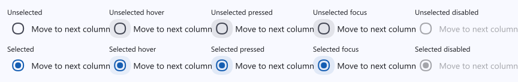 The baseline: the v2 20 px ring in its 40 px state circle, all states. | review 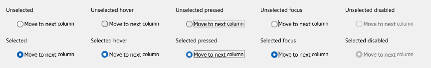 Rest selected and unselected match the Options and Filter dialog captures at 150 %: 13 unit disc (20 px), #636363 ring on a #F3F3F3 face, #005FB8 disc with a white dot of about 5 units, 11.2 px caption 2 units after it. Hover, pressed, disabled and focus are Windows 11 conventions, not captured. 6 known gaps- Hover (larger dot), pressed (smaller dot, lighter fill) and disabled are guesses; no v3 capture of any non-rest radio
- The dotted focus rectangle round the caption is a guess (see checkbox)
- The captured selected radio has a thin darker ring between the fill and the dot; not drawn
- Disc is 13 units, 19.5 px at 150 %; the capture is a crisp 20 px
- Mnemonic underline is not drawn
- Dark and high-contrast Windows palettes: Neper colours with Windows metrics
| planned | planned | planned |
| Radio groupTcxRadioGroup → control.radio_group | ready 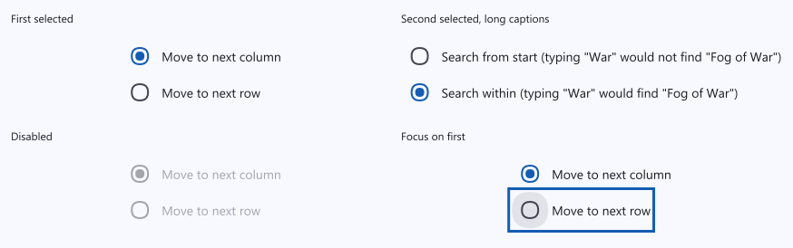 The baseline: v2 radios stacked with no frame. | review 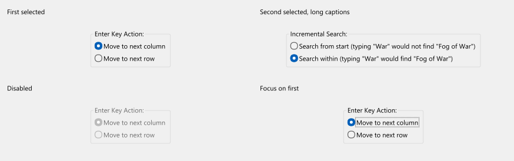 Frame (1 unit #DCDCDC, 3 unit corners), caption cut into the top edge with its text 7 units in, and the radios match the Grids options page capture at 150 %. v3 spreads the items over the group's fixed height (105 units); this group packs its rows at 21 units. 5 known gaps- v3's TcxRadioGroup has a fixed height (105 in the DFM) and spreads its items evenly over it (about 42 units apart); control.radio_group has no height, so the rows pack at 21 units. Not drawn: the spread
- The frame is as wide as its widest row; v3's groups are a fixed 325 units wide
- Each radio inherits the radio gaps (hover, pressed, focus are guesses); the disabled caption colour (#6D6D6D) is a guess
- The harness holds about four radio groups per sheet (max_states 128 in looks.open): a fifth cell fails with InvalidTree
- Dark and high-contrast Windows palettes: Neper colours with Windows metrics
| planned | planned | planned |
| Text editTcxTextEdit → control.text_field | ready 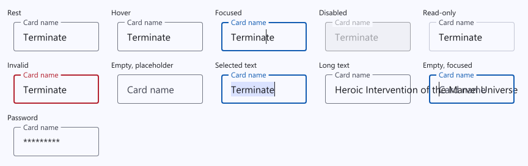 The baseline: the existing v2 outlined field, unchanged. | review 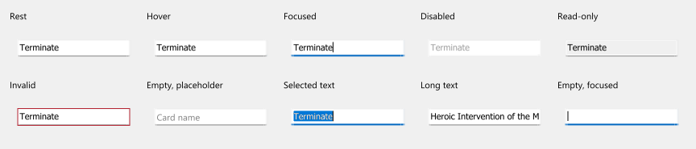 Native Windows 11 edit as v3 draws it: white face, #EEEEEE 1 px border, #929292 foot line, 22 px high; matches the spin edit and report-title memo captures at 150 %. 8 known gaps- Focused edit: accent #005FB8 2 px foot line is a Windows 11 convention, no v3 capture of a focused edit
- Hover face (#F9F9F9) and the darker disabled/invalid colours are guesses
- Read-only draws like rest (v3 StyleReadOnly sets no colour); not captured
- Invalid has no v3 look; red 1 px border is a guess
- Selection is the light Selection token with black text; Windows draws the highlight colour with white text (the edit cannot swap the text colour)
- Font is the shared Segoe UI 11.2 px; v3 edits may be Tahoma 8 pt (the 7 in the spin capture is about 7 % larger and heavier, ClearType)
- Placeholder (DevExpress null prompt) colour #808080 and show-when-unfocused rule are guesses
- Only the lfFlat + NativeStyle edit is drawn; default-look edits (combo-like #D2D2D2 rounded border) are not
| planned | planned | planned |
| Spin editTcxSpinEdit → control.spin_box | ready 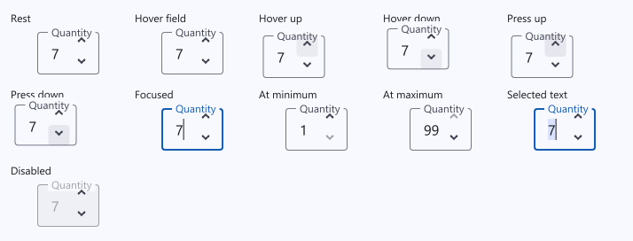 The baseline: the existing v2 outlined field, unchanged. | review 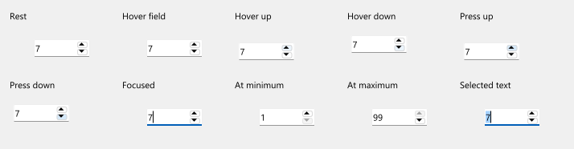 Edit frame, 22 px height, text inset, foot line and the two 13 x 8 arrow buttons (#FDFDFD face, #DADADA border, black triangles) measured from the Statistics start-hand capture (09d) at 150 %. 11 known gaps- Focused edit: accent #005FB8 2 px foot line is a Windows 11 convention, no v3 capture of a focused edit
- Hover face (#F9F9F9) and the darker disabled/invalid colours are guesses
- Read-only draws like rest (v3 StyleReadOnly sets no colour); not captured
- Invalid has no v3 look; red 1 px border is a guess
- Selection is the light Selection token with black text; Windows draws the highlight colour with white text (the edit cannot swap the text colour)
- Font is the shared Segoe UI 11.2 px; v3 edits may be Tahoma 8 pt (the 7 in the spin capture is about 7 % larger and heavier, ClearType)
- Placeholder (DevExpress null prompt) colour #808080 and show-when-unfocused rule are guesses
- Only the lfFlat + NativeStyle edit is drawn; default-look edits (combo-like #D2D2D2 rounded border) are not
- Arrow hover and pressed tints are guesses
- Fast (double-arrow) buttons of Properties.SpinButtons.ShowFastButtons are not drawn
- The Neper spin box has no disabled option, so no whole-control disabled cell
| planned | planned | planned |
| Combo boxTcxComboBox → control.combo_box | ready 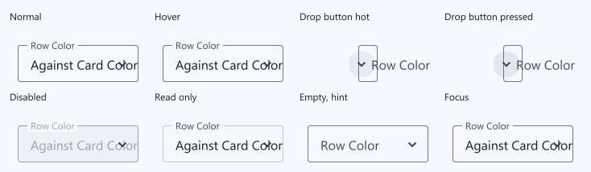 The baseline: the v2 outlined combo box in the same cells. Open lists are on neper/combo_box_lists.png (run the app with an argument, `combo_box.exe lists`); the list opens fading, so one frame shows it part way. | review 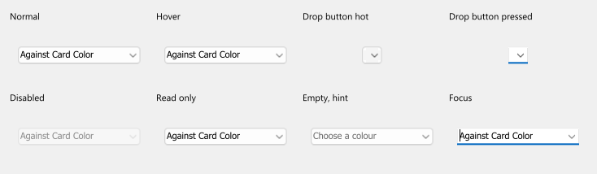 Frame measured from the Options dialog (capture 00b, 150 %): #FDFDFD face, 1 px #D2D2D2 border, radius 4, 21 tall (30 px at 150 %), a thin grey chevron 8 wide centred 8.7 from the right edge, text 2.5 in. The drop-down list (windows/combo_box_lists.png) is the DevExpress popup of captures 00c and IC1: white, rows 15 tall, the lit row #0078D7 under white text, no motion, 8 rows then a scrolling viewport. Same drawing under control.select (and so the picker popup) and under the date edit's head; the editable combo keeps its editor, Up/Down/Enter/Escape and filtering unchanged. 10 known gaps- Hover (3 % face tint), open and focused (the accent #298DD9 1.33 px border of the pilot button), pressed, drop button hot (black chevron), disabled and read-only colours are guesses: no capture shows those states of this control
- Text is 11.2 px Segoe UI; in capture 00b the text is about 3 % narrower (11 px?)
- The drop-down's frame is a uniform 1 px #BCBCBC with a 1 x 2 shadow: capture 00c shows light top and left edges and a dark #696969 right and bottom edge, which one uniform border cannot draw
- Row height is 15 (capture IC1, 22.4 px at 150 %); capture 00c measures 14 (21 px at 150 %)
- No dotted focus rectangle on the lit row (capture IC1 has one)
- Row under the pointer wins over the chosen one (as DevExpress); the chevron does not flip when open (native)
- The scrollbar in a long list is the generic thumb of widget.scroll_view, not the Windows scroll bar (see scroll_bar)
- DropDownRows (10 in some v3 filter combos) is not an option: the viewport is 8 rows
- The main-form Mode combo (capture 00c: square flat frame, raised grey drop button with a black triangle) and the in-grid editor of IC1 (grey list, blue frame, blue drop button) use other v3 styles and are not drawn
- Dark and high-contrast palettes: Neper colours with Windows metrics (the harness's windows-dark sheet renders with the dark Windows tokens, unreviewed)
| planned | planned | planned |
| Image combo boxTcxImageComboBox → control.image_select | ready 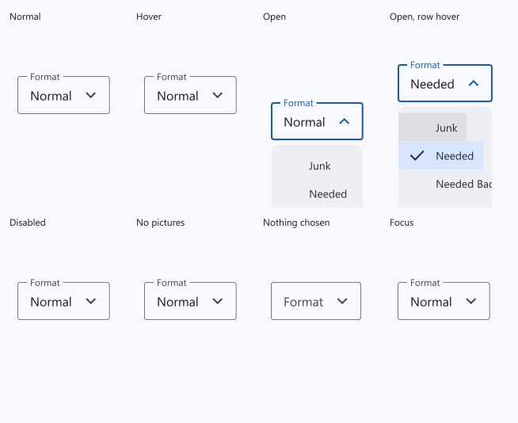 The baseline: control.select (no pictures: control.image_select falls back to it under the other looks). | review 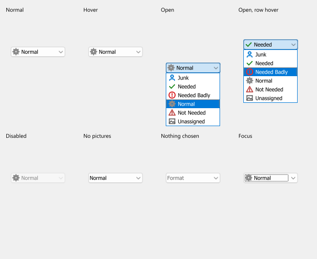 control.image_select: the combo box's frame and drop-down with a 16 px picture leading the head's value and every row (rows 18 tall with a picture). Drawn glyphs stand in for the image list's bitmaps. 6 known gaps- No v3 capture shows a picture in an image combo box (capture IC1's list has none): the 16 px picture, its 3 px gap to the text and the 18 px row height are guesses
- Frame, chevron and drop-down colours are those of the combo box, with its guessed states (hover, open, focused, disabled)
- The head is at least 112 wide, not the DFM's 121 (Width = 121 in batch_update); there is no width option
- The in-grid editor style of capture IC1 (grey list, blue frame and drop button) is not drawn
- Nothing chosen shows the label muted; v3 shows an empty edit
- Keyboard: the open list has no Up/Down/Enter handling (control.select has none either)
| planned | planned | planned |
| Date editTcxDateEdit → control.picker | ready 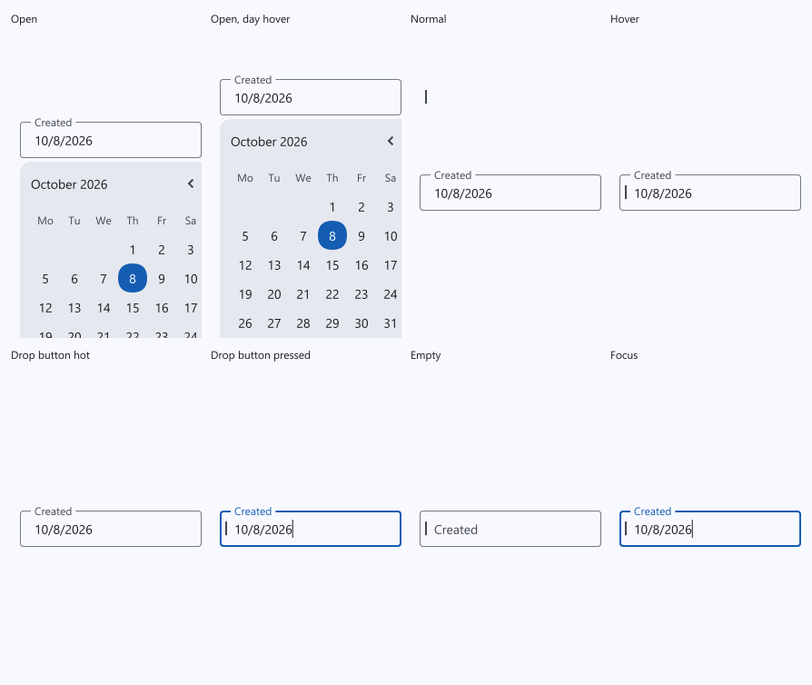 The baseline: overlay.date_picker_with with a typed field (stray carets are the harness's focus slot, as in the other sheets). | review 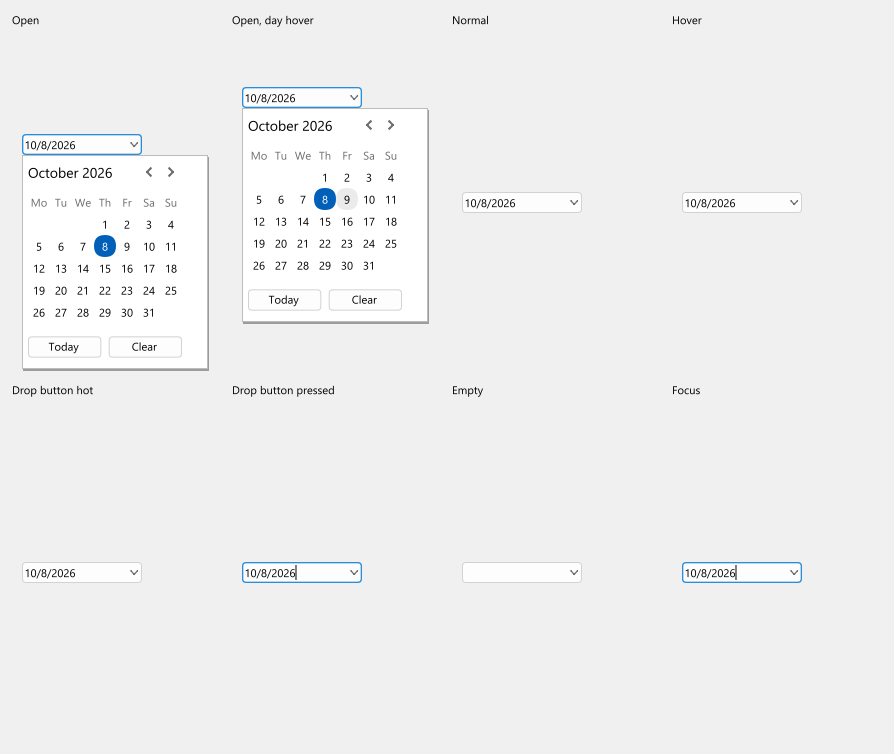 A typed date: the combo box's frame (edit and drop button, 120 wide) with the calendar docked against it in a white panel with a grey edge and a hard shadow, Today and Clear as Windows buttons below the days. The typed edit keeps its parsing (Enter commits, the form reformats on blur). 6 known gaps- No capture of the DevExpress calendar drop-down exists: the panel is the Neper calendar (rounded Primary disc for the chosen day, grey hover disc, chevron month arrows, Mo Tu We header) in Windows colours, not the DX layout
- DateButtons in the DFM are Clear, Now and Today (ckDateTime): only Today and Clear are drawn, no time part, no Now
- Panel edge, shadow and padding are guesses (those of the combo box's list)
- Hover, focused and drop button states are the combo box's guessed ones
- Read-only date edits (deck properties: Properties.EditProperties.ReadOnly) and the clear (x) button are not drawn
- The date format hint and invalid message of overlay.date_entry keep the Neper look
| planned | planned | planned |
| Mask editTcxMaskEdit → control.formatted_field | ready 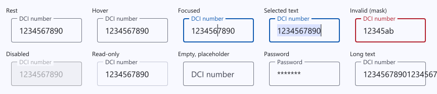 The baseline: the existing v2 outlined field, unchanged. | review 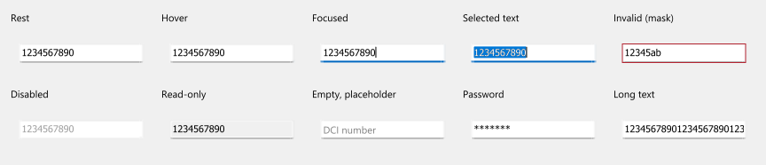 Same native edit frame as the text edit; the mask accept rule drives the invalid cell. 10 known gaps- Focused edit: accent #005FB8 2 px foot line is a Windows 11 convention, no v3 capture of a focused edit
- Hover face (#F9F9F9) and the darker disabled/invalid colours are guesses
- Read-only draws like rest (v3 StyleReadOnly sets no colour); not captured
- Invalid has no v3 look; red 1 px border is a guess
- Selection is the light Selection token with black text; Windows draws the highlight colour with white text (the edit cannot swap the text colour)
- Font is the shared Segoe UI 11.2 px; v3 edits may be Tahoma 8 pt (the 7 in the spin capture is about 7 % larger and heavier, ClearType)
- Placeholder (DevExpress null prompt) colour #808080 and show-when-unfocused rule are guesses
- Only the lfFlat + NativeStyle edit is drawn; default-look edits (combo-like #D2D2D2 rounded border) are not
- Password echo shows asterisks; v3 (eemPassword) shows Windows bullets
- Mask editing behaviour is not a look item
| planned | planned | planned |
| MemoTcxMemo → control.text_area | ready 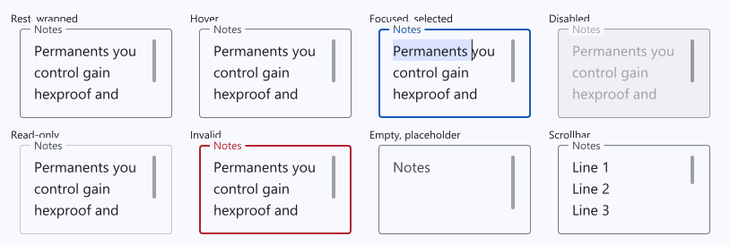 The baseline: the existing v2 outlined field, unchanged. | review 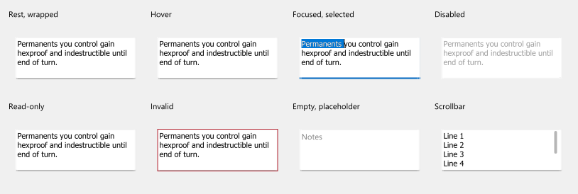 Native edit frame at memo size with wrapped lines; white face, faint border and #929292 foot match the report-title memo capture (TP2). 10 known gaps- Focused edit: accent #005FB8 2 px foot line is a Windows 11 convention, no v3 capture of a focused edit
- Hover face (#F9F9F9) and the darker disabled/invalid colours are guesses
- Read-only draws like rest (v3 StyleReadOnly sets no colour); not captured
- Invalid has no v3 look; red 1 px border is a guess
- Selection is the light Selection token with black text; Windows draws the highlight colour with white text (the edit cannot swap the text colour)
- Font is the shared Segoe UI 11.2 px; v3 edits may be Tahoma 8 pt (the 7 in the spin capture is about 7 % larger and heavier, ClearType)
- Placeholder (DevExpress null prompt) colour #808080 and show-when-unfocused rule are guesses
- Only the lfFlat + NativeStyle edit is drawn; default-look edits (combo-like #D2D2D2 rounded border) are not
- Scrollbar is the Neper scroll thumb overlay; the Windows scroll bar is another group's
- Caret-line scrolling only; no capture of a memo with a scrollbar
| planned | planned | planned |
| Button editTcxButtonEdit → control.button_edit | ready 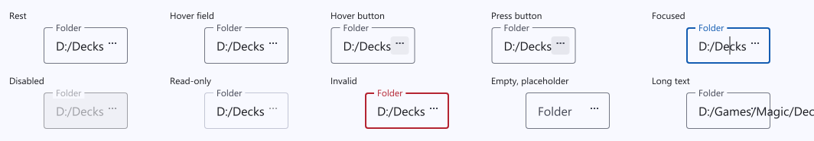 The baseline: the existing v2 outlined field, unchanged. | review 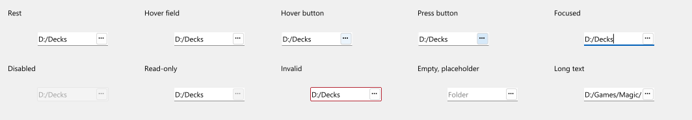 Edit frame plus an ellipsis mini button (#FDFDFD face, #DADADA border, radius 3, three dots) after the in-grid ellipsis capture (ED1). 10 known gaps- Focused edit: accent #005FB8 2 px foot line is a Windows 11 convention, no v3 capture of a focused edit
- Hover face (#F9F9F9) and the darker disabled/invalid colours are guesses
- Read-only draws like rest (v3 StyleReadOnly sets no colour); not captured
- Invalid has no v3 look; red 1 px border is a guess
- Selection is the light Selection token with black text; Windows draws the highlight colour with white text (the edit cannot swap the text colour)
- Font is the shared Segoe UI 11.2 px; v3 edits may be Tahoma 8 pt (the 7 in the spin capture is about 7 % larger and heavier, ClearType)
- Placeholder (DevExpress null prompt) colour #808080 and show-when-unfocused rule are guesses
- Only the lfFlat + NativeStyle edit is drawn; default-look edits (combo-like #D2D2D2 rounded border) are not
- Ellipsis button size 17 x (height-4) is a guess; the capture only shows the in-grid 14 x 12 button
- Button hover/pressed/disabled colours and the read-only treatment (button dimmed) are guesses
| planned | planned | planned |
| Token editTdxTokenEdit → control.token_field | ready 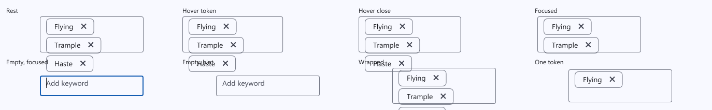 The baseline: the existing v2 outlined field, unchanged. | started 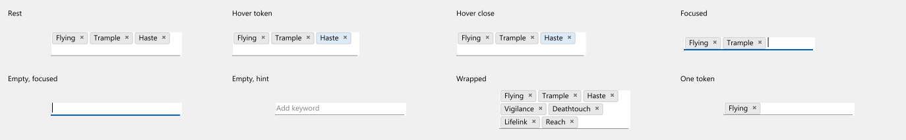 Edit frame holding rounded tokens with a cross and a wrapping input; no v3 capture of a token edit exists. 12 known gaps- Focused edit: accent #005FB8 2 px foot line is a Windows 11 convention, no v3 capture of a focused edit
- Hover face (#F9F9F9) and the darker disabled/invalid colours are guesses
- Read-only draws like rest (v3 StyleReadOnly sets no colour); not captured
- Invalid has no v3 look; red 1 px border is a guess
- Selection is the light Selection token with black text; Windows draws the highlight colour with white text (the edit cannot swap the text colour)
- Font is the shared Segoe UI 11.2 px; v3 edits may be Tahoma 8 pt (the 7 in the spin capture is about 7 % larger and heavier, ClearType)
- Placeholder (DevExpress null prompt) colour #808080 and show-when-unfocused rule are guesses
- Only the lfFlat + NativeStyle edit is drawn; default-look edits (combo-like #D2D2D2 rounded border) are not
- Token face #E8E8E8, border #D2D2D2, hover tint and cross colours are all guesses (no capture)
- Selected/focused token state and the suggestion drop-down are not drawn
- v3 token edits are fixed 26 / 45 px high (MaxLineCount); this one grows with its tokens
- Hover on the close cross could not be driven separately by the harness (shows token hover)
| planned | planned | planned |
| Check list boxTcxCheckListBox → control.multi_select_list | ready 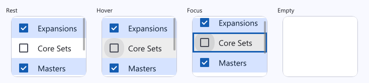 The baseline: the v2 multi-select list (selection fill, 40 px rows, state circles). | review 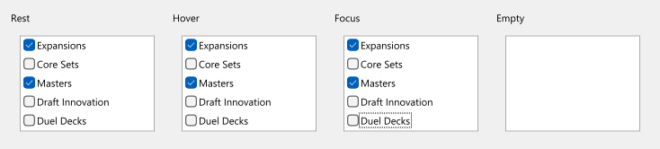 No v3 form uses a TcxCheckListBox (no such class in the DFMs), so there is nothing to match the list against. The rows are the measured native check box mark (see checkbox) at 21 unit row height on a white viewport. 7 known gaps- No v3 reference: the viewport edge (1 unit #ABABAB, square), the 21 unit row height, the 4 unit left inset and the white face are guesses carried over from the combo box and grid measurements
- Selection (a highlighted current row, distinct from checked) is not drawn: control.multi_select_list has one flag per row, checked, and no current-row state; DevExpress lfFlat would draw one
- Hover has no row highlight, only the mark's own hover colour (guessed, see checkbox); DevExpress check lists do not hot-track rows by default
- The focus rectangle round a row's caption is a guess (see checkbox); the harness's Tab sequence lands it on the last row
- No disabled state: the control takes no enabled flag
- Overflow (more rows than the viewport, a scroll bar) is not shown in the sheet and the scroll bar has no Windows look yet
- The count bar variant (multi_select_list_counted) keeps the Neper look
| planned | planned | planned |
| Progress barTcxProgressBar → control.progress_bar | ready 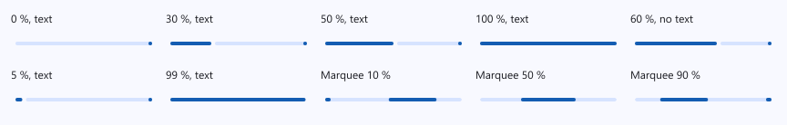 The baseline: the v2 pill bar (4 tall, stop dot), determinate and indeterminate. | review 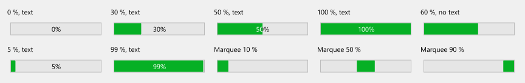 v3's TcxProgressBar with NativeStyle: 21 tall (DFM default height), 1 px frame, flat square green fill inside it, percent centred (ShowTextStyle cxtsText: black on the track, white over the fill), marquee as one travelling segment. Read from import.vcl.form.dfm; no capture of a v3 progress bar exists. 5 known gaps- No v3 capture of a progress bar: the frame #BCBCBC, track #E6E6E6 and fill #06B025 are the Windows 10/11 comctl theme from memory
- Marquee segment width (a fifth of the bar) and speed (2 s) are guesses; the native glow highlight is not drawn
- Text is Segoe UI 11.2 px; v3 sets Tahoma 8 pt (Height -11) for this bar
- Not implemented: BarStyle cxbsGradient (main form: 0,89,130 to 0,62,91), vertical Orientation and PeakValue (statistics form), disabled state, error and paused tones
- progress_ring keeps the Neper look (v3 has none)
| planned | planned | planned |
| Group boxTcxGroupBox → control.group_box | ready 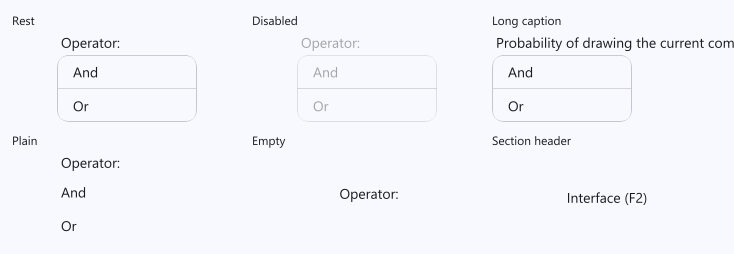 The baseline: the v2 outlined group (rows with dividers); the section header cell shows a plain title. | review 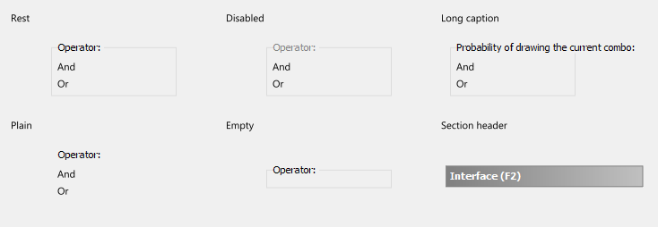 1 px #DCDCDC frame on the #F0F0F0 dialog face with the caption cut into the top edge, 8 in, measured from the statistics dialog (Operator/Mode boxes) at 150 %; the option pages' grey section header (24 tall, #808080 to #C0C0C0 gradient, 1 px edge) is added as control.windows_section_header. 6 known gaps- Disabled caption colour is a guess (no disabled capture)
- Content padding (8 sides, 12 top, 8 bottom) and the 4 gap between rows are guesses; v3 places children absolutely
- Frame corner radius taken as 0 from a 150 % capture
- Section header title should be bold white (v3) but only the regular Segoe face is registered, so it renders regular; its trailing icon is not drawn
- Collapsible group and invalid message keep the Neper look
- Caption mnemonic underline not drawn
| planned | planned | planned |
| Page control (tabs)TcxPageControl → control.tabs | ready 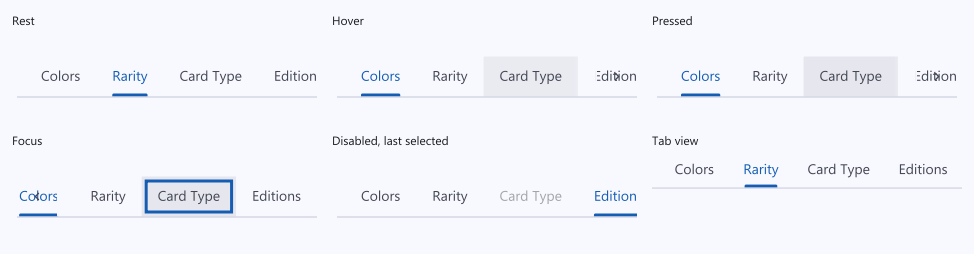 The baseline: v2 tabs (primary indicator) and the tab view. | review 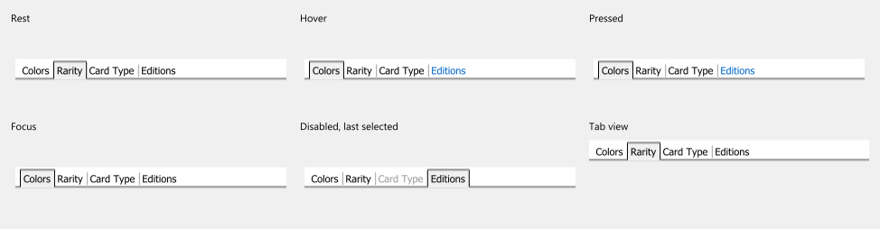 lfUltraFlat tabs as in the statistics dialog: white strip, 21 tall tabs with 8 sides, #2B2B2B line under the strip, #B0B0B0 hairlines, selected tab framed #2B2B2B open at the bottom on #F0F0F0, hot tab label blue; keyboard shortcuts, semantics and tab_view are the shared ones. 7 known gaps- Tab images (v3 shows an icon before each label) are not drawn
- Hot-tracked label is also underlined in v3; underline not drawn
- Hover blue is #0066CC from ClearType-fringed pixels, disabled tab ink is a guess, pressed looks like hover
- The thin grey page border under the strip (second line in the capture) is not drawn
- Overflowing tabs: v3 scroll buttons or multi-row are not drawn under this look
- Tabs at the bottom or sides, close buttons: not in v3's captures, not drawn
- The widget harness holds 128 element states, so the sheet has six bars
| planned | planned | planned |
| SplitterTcxSplitter → control.split_view | ready 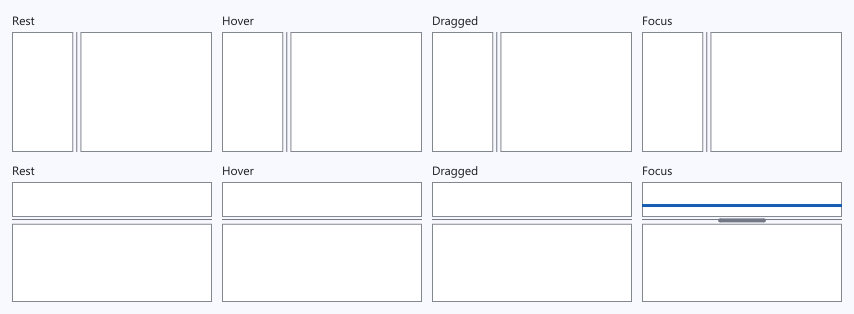 The baseline: the v2 sash (1 px line, grip on hover, primary line while dragged). | review 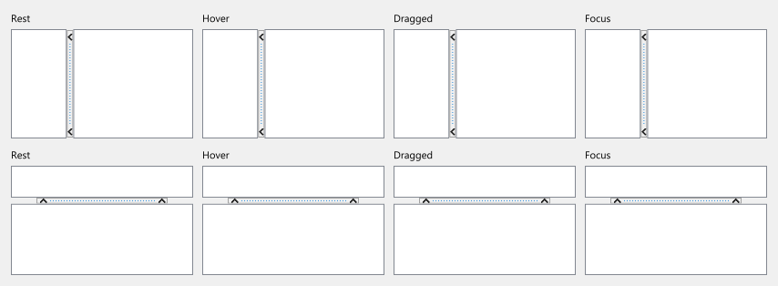 v3's TcxSplitter (8 wide, simple hot zone) from the main window capture: dialog-face strip, a 1 px #A0A0A0 framed hot zone about 144 long with near-black chevrons toward the first pane and #248ADB dots; upright and lying strips. 5 known gaps- Hot zone length 144 is read off two captures (139 and 149); v3's rule not found
- Hover and dragged colours (blue-tinted zone) are guesses; v3 drags a dotted XOR line instead
- The hot zone's toggle-panel click (collapse) is not wired; chevron direction is fixed toward the first pane
- Chevron is a 7 x 4 staircase, a little lighter than the capture's
- Sash input reach is 8 (v3) rather than the Neper 24
| planned | planned | planned |
| Status barTdxStatusBar → navigation.status_bar | ready 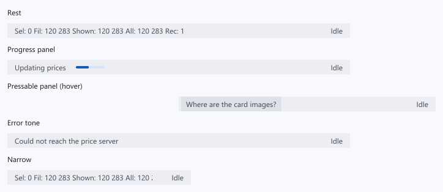 The baseline: v2 status bar. | review 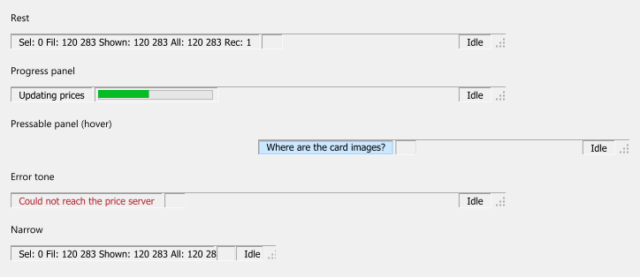 18 px bar, #ACACAC top line, sunken panels (#A0A0A0 top/left, light bottom/right) 2 px apart, Tahoma 10.8 px, 8.5 px text inset, grip; text width and panel edges match capture 03 at 150 %. 6 known gaps- Progress container panel (grey track, #06B025 fill) is a guess
- Panels hug their text; v3 panels have fixed DFM widths
- Size grip is a dot triangle approximating the capture's diagonal strokes
- A narrow bar clips the first panel instead of eliding it
- Hover colour of a pressable panel is a guess
- Dark and high-contrast palettes keep Neper colours
| planned | planned | planned |
| Toolbar buttonTdxBarButton → control.glyph_button | ready 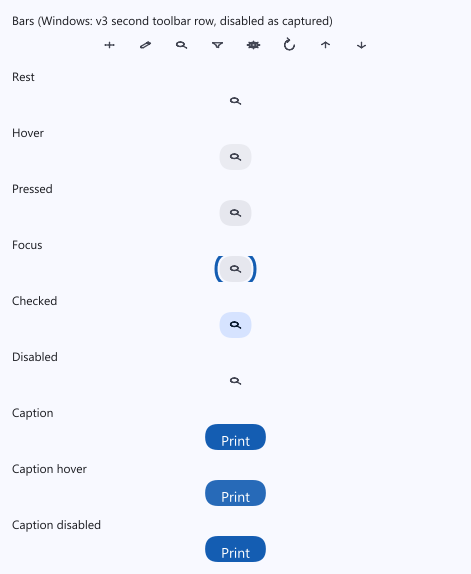 The baseline: round glyph buttons (control.glyph_toggle). | review 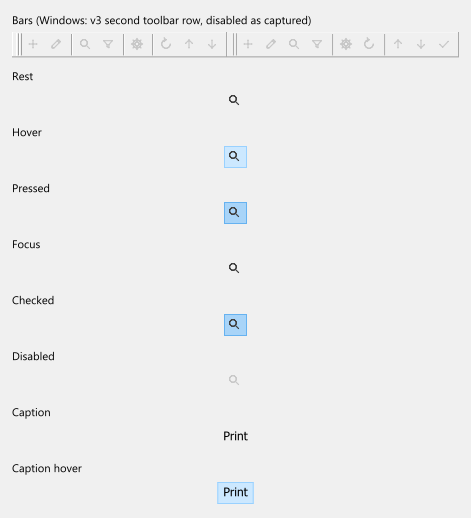 Flat 22 px buttons with a 16 px glyph on the dxBar strip: #F0F0F0 face, light top/left line, #ADADAD bottom line, two-line grip, separators; strip height 24, button pitch and grip position measured from main-window capture 03 at 150 %. 7 known gaps- Hover, pressed and checked colours (light blues) are guesses: no capture shows them
- v3 icons are coloured bitmaps; a drawn glyph stands in
- No keyboard focus look (DX bars are not focusable)
- Disabled glyph colour #A0A0A0 is a guess
- Captioned buttons use Tahoma only if the theme's second font is Tahoma
- Dropdown arrow button and toolbar customisation drag handle not drawn
- Dark and high-contrast palettes keep Neper colours
| planned | planned | planned |
| Menu barTdxBarManager (main menu) → navigation.menu_bar | ready 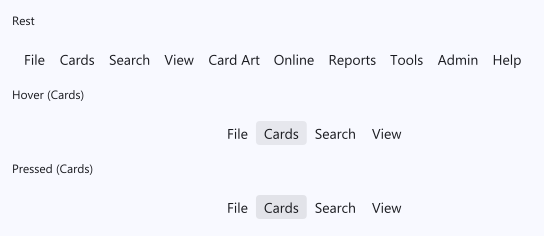 The baseline: v2 menu bar (the open-menu sheet shows no menu because the menu fades in). | review 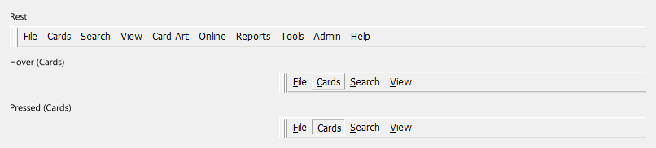 22 px strip with grip, Tahoma titles with always-visible mnemonic underline, 6 px title padding, sunken #AFAFAF-bordered open title; title text and spacing match capture 03 closely (size fitted by ink width, 11.7 px). 6 known gaps- Hover and pressed title colours are guesses (light blues)
- Open title drawn as a flat #AFAFAF box, the capture shows a sunken two-tone edge
- Mnemonic is always the first letter; 'Card Art' underlines C where v3 underlines A
- Title spacing drifts about 2 px over ten titles
- Collapsed menu bar keeps the Neper look
- Dark and high-contrast palettes keep Neper colours
| planned | planned | planned |
| Popup menuTdxBarPopupMenu → overlay.menu | ready 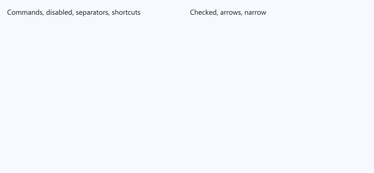 The baseline: v2 menu (navigation.bar_menu); the menu fades in so the static sheet shows little. | review 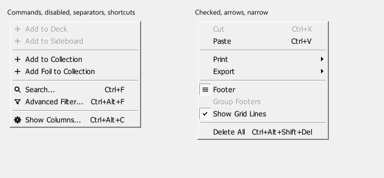 20 px rows, 18 px picture column, text at 24.5 px, Tahoma, bevel (light top/left, dark right/bottom), #B0B0B0 over light separators 10 px, hover #ADD6FF (measured in the grid menu capture), disabled #A0A0A0, shortcut 23 px from the right; geometry matches C1-cell-menu-v3 at 150 %. Built into navigation.bar_menu (BarCommand); overlay.menu and context_menu keep the Neper look. 8 known gaps- Row icons are drawn glyphs, not the v3 bitmaps
- No mnemonic underlines on items
- Checked frame colours (#CCE8FF/#B6CBDC) read from one capture only
- Disabled text has no white emboss shadow
- The grid's own popup (AL1) has a flat #A0A0A0 border and 22 px rows; only the main-menu style is drawn
- Submenu arrow is a chevron glyph, v3 draws a filled triangle
- Drop shadow is a guess
- overlay.menu and context_menu are not branched
| planned | planned | planned |
| Hint (tooltip)TcxHintStyleController → overlay.tooltip | ready 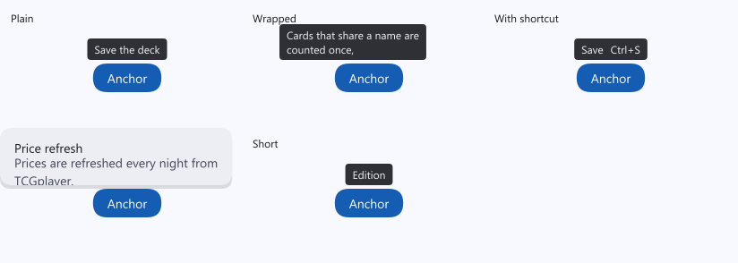 The baseline: the dark plain tooltip and the raised rich tooltip. | review 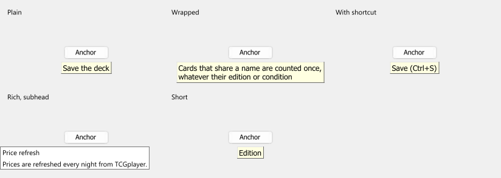 v3's TcxHintStyle window: square, white face, 1 px #767676 frame, black Segoe UI 11.2 px text with 4 x 2 px padding, shown below its anchor with no fade or scale; lines break only where the text does. Colours and padding read off the grid header hint capture docs/grid-parity/T1-header-hint-v5.png (the v5 grid, recorded as matching v3 in D2430); v3 sets Tahoma 8 pt for the hint (hscMain.HintStyle.Font). 7 known gaps- No capture of the real v3 hint itself: the look is taken from the v5 header hint that was matched to it
- Font is Segoe UI 11.2 px, v3 configures Tahoma 8 pt (Height -11) for hint and caption
- Padding, the 320 px cap on the plate and the 4 px gap under the anchor are fitted, not measured
- The v3 hint has a drop shadow on some Windows versions; none is drawn
- Rich tooltip action buttons keep the Neper text-button look and are not in the sheet
- The sheet holds five cells: a sixth overlay made the harness frame an InvalidTree (probably its 16384-command limit)
- Dark and high-contrast Windows palettes keep Neper colours with the Windows shape
| planned | planned | planned |
| Scroll barTcxScrollBar → widget.scrollbar | ready 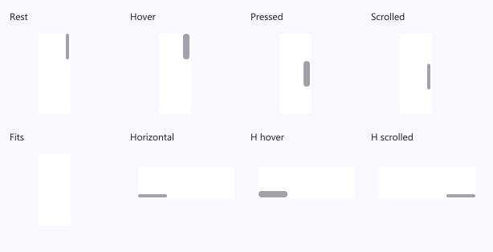 The baseline: the v2 overlay thumb (4 wide, 8 when the pointer is in the trailing 12) via control.scroll_area. | review The grid's v3 bar as a control (control.scroll_area): 16 wide #F0F0F0 track, #858585 slim 2.7 thumb, 16 arrow slots at each end, vertical and horizontal, from SB1/SB2 and the grid's gridlook.v3() values. 6 known gaps- Hover thickness 6 is an estimate (v3's hovered width not measured; the grid code uses the same)
- Pressed thumb colour (#606060) and the hover arrows (7 x 4 chevrons) are guesses: the captures show no arrows
- Disabled bar not drawn
- Thumb dragging and clicks on the track or arrows go through the viewport's own invisible thumb, not the drawn bar
- The grid's own bar in collection.e is a separate hand-drawn copy, not yet switched to this control
- The track is the dialog face, so it only shows beside a white pane
| planned | planned | planned |
| List boxTcxListBox → control.list_box | ready The baseline: the v2 list box (rounded frame, check on the chosen row). | review Framed viewport with the combo box's face and border (#FDFDFD, #D2D2D2, radius 4) and the drop-down's rows (15 tall, chosen row #0078D7 under white text), scrolling past its rows. v3 has no TListBox or TcxListBox (only TcxCheckListBox): this is derived from the combo box evidence, not a capture of a list box. 6 known gaps- No v3 list box exists to measure: frame, row height 15 and selection colour are taken from the combo box and its drop-down
- No hover effect (DevExpress list boxes have none without hot tracking); the Hover sheet cell is therefore unchanged
- No dotted focus rectangle on the current row and no focus frame: the Windows tokens draw no focus ring
- control.list_box has no disabled option, so there is no disabled cell
- The scrollbar is the generic thumb of widget.scroll_view, not the Windows scroll bar (see scroll_bar)
- TcxCheckListBox (print_proxies) is control.multi_select_list and keeps its look (see check_list_box)
| planned | planned | planned |
| Tree listTcxTreeList → tree_adapter | ready The baseline: collection.tree_table, the existing v2 tree table, same two sheets. | review collection.tree_table under the Windows profile takes gridlook.v3() as its table look: 19 px rows, white / #EFEFEF stripes counted over the visible rows, no rules, the #A6D2FF selection with its edge, the grid's header (21 px, white, #C6C6C6 line), a 20 px indent and the grid's plus and minus boxes as twisties (the DevExpress Office11 expand button). v3's only tree list is tlAbilities in filter.vcl.form.dfm: lfOffice11, NativeStyle, MultiSelect, no tree lines, ColumnAutoWidth, Styles from the TreeList stylesheet (selection #A6D2FF, even #EFEFEF, odd white). Sheet: three columns and levels with a selected leaf, and a one column list in the filter form's shape. 8 known gaps- No capture of any v3 tree list exists: the look is the grid's measured look applied to the tree by the shared stylesheet colours, not a measured tree list
- The expand box is the grid's (grey frame, black plus, flat white); the capture of the grid's group box shows a navy (#2C4574) plus and a light gradient fill
- ShowRoot = False (no expander or indent on the first level) and CheckGroups (check boxes on the nodes) of tlAbilities are not drawn; TreeOptions has no flag for them and the check box control has no Windows look yet
- Indent 20 px is the DevExpress default, not measured
- Row text is the theme's body text, not the grid's 10.35 px
- Header has no sort glyph or hover colour on this sheet; the inactive-focus selection colours (#ECE9D8 and the grid's #D5E4EE) are not applied
- Plain tree and outline (no columns) keep the Neper look
- No 100 % or 150 % reference to compare against
| planned | planned | planned |
| Vertical grid (property grid)TcxVerticalGrid → collection.property_grid | ready The baseline: collection.property_grid_of, the existing v2 property grid with group headings, same two sheets. | review collection.property_grid_of under the Windows profile: 19 px rows, a #F0F0F0 row header column with black Segoe UI names, white value cells, 1 px #A0A0A4 (clMedGray, the DFM's GridLineColor) lines between header and value and under each row, the selected row's header #A6D2FF, category rows a #F0F0F0 band 21 px tall with a plus/minus box and a bold caption. Row header 164 and 330 wide as in deck_properties.vcl.form.dfm (vgProperties: lfOffice11, NativeStyle, CategoryExplorerStyle, Tahoma 8). Sheet: the Deck Properties rows (name text editing, read-only text, combo box, button-edit text, spin edit, check box) with all categories open, and with two shut. 8 known gaps- No capture of v3's vertical grid exists: everything except the line colour (DFM) and the 164 px header width is a DevExpress Office11 default from memory
- CategoryExplorerStyle (Explorer-bar category rows) is approximated by a flat band; the real band, its arrow glyph and any gradient are not drawn
- The selected row colour (#A6D2FF, from the other v3 stylesheets) is a guess: the vertical grid's own Selection style is empty in the DFM
- In v3 only the focused row shows an editor and the others show plain text (and a check glyph); the sheet puts real editors in the combo, spin and check rows, drawn with Neper looks until those controls have Windows looks, so they are 22+ px tall and grow their rows
- TcxMultiEditorRow (Deck/Sideboard, land/creature/spell counts), image combo images, hyperlink and date editors and the row hint are not drawn
- The splitter between header and value is a 1 px line; the draggable divider (options.divide) shows no cursor or hover colour
- Collapsed categories show no property count; keyboard focus ring on a row is not drawn
- No 100 % or 150 % reference to compare against
| planned | planned | planned |
| Data gridTcxGrid → datagrid (own Look: gridlook.v3()) | ready The baseline: the theme's own grid (look.on false), the same two sheets. | review datagrid.build applies gridlook.v3() under the Windows profile (unless the application set a look), so no per-app wiring. Sheet: a flat list (header, filter row, stripes, selected row, vertical scroll bar, summary footer) and a grouped grid (group row with the plus/minus box and summaries), in the #F0F0F0 form face, rendered at 100 % and 150 %; windows/data_grid-vs-ref@1.5x.png has a crop of the v3 deck capture (03-main-pool-deck-v3.png) on the left. Row pitch 19 (28.5 at 150 %), header 21, #FFFFFF/#EFEFEF stripes, #A6D2FF selection with its #83878B edge match the capture; the measured parity itself is docs/grid-parity. 7 known gaps- No reference at 100 % (v3 captures are at 150 % only); the 100 % sheet is the 150 % measurement scaled
- Reference is a crop of the main window with a different data set (icons, navigator bar, band tabs), so the comparison is of metrics and colours, not pixel for pixel
- The 1 px frame (#828790) is painted under the header and rows on the top and left and shows only on the right and bottom of the grid box (existing datagrid layout, not touched here)
- Footer: the summary cells sit on a grey band with a yellow gap, v3 has a yellow band with grey summary cells only where a summary exists; footer sums are not rounded to the column format ($1595)
- Scroll bar is the grid's thin thumb on a #F0F0F0 track; v3's native scroll bar arrow buttons are not drawn
- Hover and pressed rows, the unfocused selection (#D5E4EE) and the filter row's operator icons are the grid lane's, not shown on this sheet
- Text is the theme's Segoe UI at the grid look's 10.35 px; v3's cell font face (Tahoma?) is not confirmed
| planned | planned | planned |
| Dialog (form chrome)TForm / TcxButton row → overlay.dialog | ready The baseline: the v2 card over a scrim. Also neper/dialog_message.png (alert with icon) and neper/title_bar.png (the frameless title bar). | review v3's Options window chrome: the dark Windows 11 caption (#1F2022, white Segoe UI 12 px title at 31, a 34 x 30 close button with a 10 px X, red hover), a #F0F0F0 face with 8 px corners, and the button row bottom right (9 from the right, 7 from the bottom, 75 x 22, 9 apart, accent-bordered default), no scrim. Caption colours, height, title position, X size and button geometry measured from 00-options-interface-controls-v3.png against windows/dialog@1.5x.png. Also windows/dialog_message.png (stock white message area, icon, grey button strip) and windows/title_bar.png (navigation.title_bar under the Windows profile). 9 known gaps- Dialog width is a fixed 420 and the body padding (12, message box 20) is a guess; v3 sizes each form by hand
- The app icon in the caption is not drawn (the title bar draws a menu glyph placeholder); v3 shows the program icon at 9 px in
- No window shadow: the engine draws a hard offset shadow, Windows 11 a soft one; the real window also has a 1 px DWM border
- The caption is 30 px tall and the close button 34 wide as measured, but win.caption_layout (hit testing for title_bar) still says 32 and 46
- Inactive caption (#2B2B2B), min/max hover (white 8 %), close hover and pressed colours, and the message icon (a Primary-coloured Warning glyph) are guesses; no capture exists
- The message box layout is the stock Windows one from memory; v3 has no captured message box
- Accelerator underlines (Apply, with the A underlined) are not drawn
- Dark and high-contrast Windows palettes keep Neper colours with the Windows metrics
- Rich sheets in one frame are limited to what the harness runtime holds, so the overlay dialog is rendered alone per sheet
| planned | planned | planned |